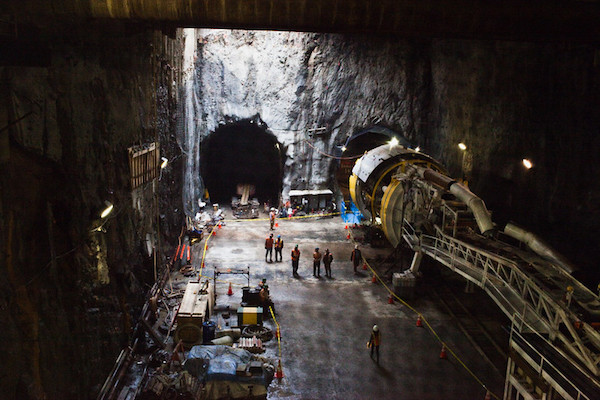

CITY

Subway Milestone Met
File photo Courtesy WIRED magazine (May 27)
SPRINGFIELD One of the biggest engineering projects in the history of the state has reached a milestone today. The juncture of lines A and K was opened and crews immediately began reinforcing the aging line K. Weather concerns subsequently slowed down construction, which is already 18 months and $270 million over budget.
Widely considered a boondoggle by skeptics in the rigid airship industry, line A boasts a number of improvements over its predecessor: earthquake safety improvements, faster fire detection, and multiple points of exits for emergency use. Line A will be fully automated, a sore point with the Teamsters Union, which has invested over $2 million in a campaign to improve the image of Springfield's subway drivers. That's a tough nut to crack, because Springfield's on-time record is dismal. Though mayor Ian Thomas demurs, most experts insist there was no other avenue to success.